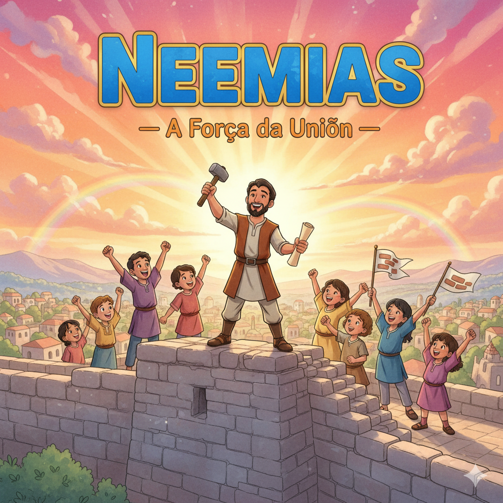
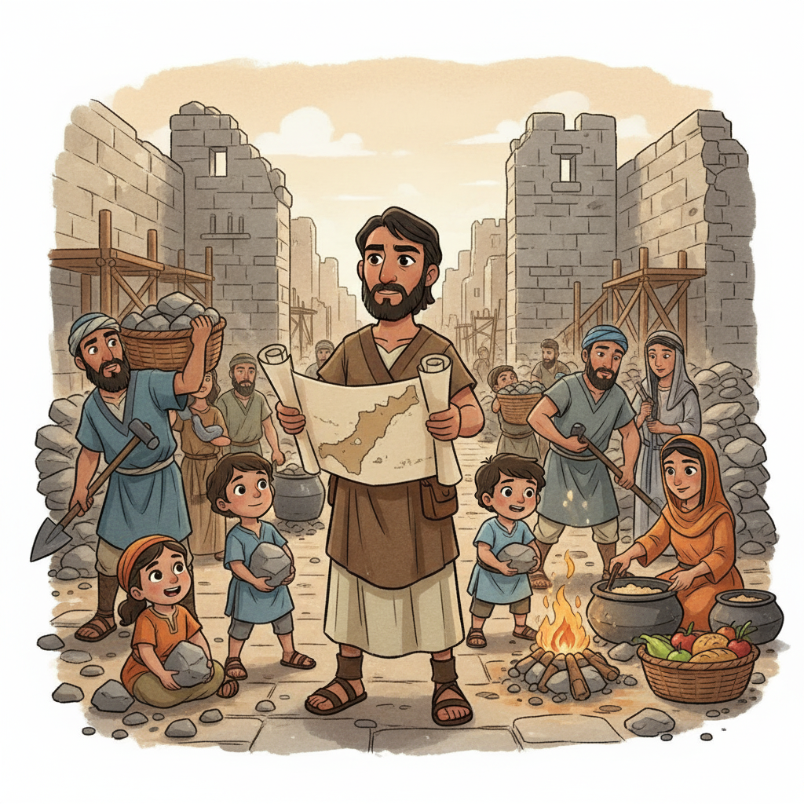

Oração, Coragem e Reconstrução — Um Resumo Visual para Crianças
Neemias soube que Jerusalém estava destruída,
Chorou, jejuou — seu coração doía!
Mas antes de pedir ao rei uma saída,
Ele orou a Deus por dias, com fé decidida.
💙 Quando tiver um problema difícil,
Antes de agir — ore! É o caminho mais hábil.
Deus ouve, responde e abre o caminho certo,
Com Ele no controle, o futuro é aberto!
Os muros estavam caídos, que desolação!
Mas o povo se uniu com determinação.
Cada família cuidou de um pedaço da parede,
E juntos conseguiram — que façanha que se vê!
🤝 Na família de Deus ninguém trabalha sozinho,
Cada um faz sua parte nesse caminho.
Unidos em amor e na mesma missão,
Conquistamos o impossível em comunhão!
Quando o povo ouviu a lei, se pôs a chorar,
Mas Neemias disse: "Não é hora de lamentar!"
"Comam, celebrem, partilhem com quem não tem,
A alegria do Senhor é a força que vem!"
🎉 Ser cristão não é viver na tristeza,
É celebrar a graça com toda leveza!
A alegria de Deus nos sustenta e nos fortalece,
E com ela a vida floresce e cresce!
📘 Moral da história:
Ore, una-se aos outros e celebre com alegria —
a alegria do Senhor é a nossa força cada dia! 🧱

O copeiro do rei persa que, movido por amor a Jerusalém, largou tudo para liderar a reconstrução dos muros da cidade em 52 dias.
O escriba que aparece em Neemias 8 lendo a lei de Deus para o povo. Quando todos entenderam as Escrituras, primeiro choraram — depois comemoraram!
Os inimigos que zombavam, ameaçavam e conspiravam para parar a obra. Mas nenhum plano deles funcionou contra a determinação de Neemias e o poder de Deus!
"Senhor, inclina o teu ouvido e ouve a minha oração, a oração do teu servo que agora faz diante de ti de dia e de noite."
— Neemias 1:6
Neemias não era um guerreiro nem um profeta — era o copeiro do rei persa Artaxerxes. Um cargo de prestígio e segurança. Mas quando soube de Jerusalém destruída, trocou o conforto do palácio pelo desafio da fé.
Na hora em que o rei perguntou o que queria, Neemias fez uma "oração relâmpago" silenciosa antes de responder (Ne 2:4-5)! Deus estava tão presente que Neemias orou em segundos e Deus respondeu na hora!
"Assim o povo trabalhou de todo coração."
— Neemias 4:6
Quando os inimigos ameaçaram atacar, Neemias dividiu o povo: metade trabalhava na construção enquanto a outra metade ficava de guarda com lanças e escudos. Alguns seguravam a espada enquanto carregavam pedras! (Ne 4:17)
Os trabalhadores ficavam espalhados pela cidade enorme. Neemias disse: "Se ouvir o som da trombeta, venha para cá!" (Ne 4:20). Era o plano de defesa — e um lembrete de que a união salva vidas.
"Não fiqueis tristes, pois a alegria do Senhor é a vossa força!"
— Neemias 8:10
Esdras leu a lei por horas — da manhã até o meio dia! O povo ouviu, entendeu e começou a chorar. Mas Neemias e Esdras disseram: "Hoje é dia sagrado, não é dia de choro — é dia de festa!" Que reviravolta linda!
No meio da celebração, Neemias ordenou: "Mandem porções para os que não têm nada preparado." (Ne 8:10) A alegria cristã nunca é só pessoal — ela transborda para os outros!
"Tu és o Senhor, só tu! Tu fizeste o céu, o céu dos céus com todo o seu exército, a terra e tudo o que nela existe, os mares e tudo o que neles há."
— Neemias 9:6
Em Neemias 9, o povo fez uma das orações mais longas da Bíblia — confessando os pecados de toda a história de Israel, desde o Egito até ali. Reconheceram: "Somos culpados, mas Deus é misericordioso!"
Neemias precisou reformar o povo duas vezes — foi a Pérsia e voltou, e tudo havia escorregado de novo! A vida espiritual precisa de manutenção constante, igual aos muros que precisam de cuidado.
"Não fiqueis tristes, pois a alegria do Senhor é a vossa força!"
— Neemias 8:10
Quando o povo entendeu a Palavra de Deus, choraram — mas foram lembrados que a alegria de Deus é o nosso combustível. Não uma alegria superficial, mas a alegria que vem de conhecer e confiar em Deus!
😊 O que é essa alegria?
Não é rir de tudo. É a paz profunda de saber que Deus está no controle — mesmo quando a vida é difícil.
💪 Como ela dá força?
Quando estamos alegres em Deus, enfrentamos os problemas sem desanimar. É como recarregar as energias em Deus todo dia!
🎁 Como cultivar?
Lendo a Bíblia, orando, cantando, sendo grato e partilhando com outros — como o povo fez na festa de Neemias 8!
Os muros de Jerusalém, que estavam destruídos há décadas, foram reconstruídos em apenas 52 dias! (Ne 6:15) Até os inimigos reconheceram que aquilo só era possível com a ajuda de Deus.
Os construtores trabalhavam com uma mão e seguravam a espada com a outra (Ne 4:17). É uma imagem poderosa do cristão: construindo o reino de Deus e estando preparado ao mesmo tempo!
Neemias desceu de um palácio real para restaurar Jerusalém destruída. Jesus desceu do trono de Deus para restaurar a humanidade perdida — e o fez não com pedra e argamassa, mas com amor e sacrifício. (Fl 2:6-8)
Neemias passou meses orando antes de agir. Quando você tem um problema grande, qual é o seu primeiro instinto — agir logo ou orar primeiro? Como poderia mudar isso?
Cada família cuidou de um pedaço do muro na frente de sua casa. Na sua família ou turma, como vocês poderiam dividir responsabilidades para construir algo juntos?
"A alegria do Senhor é a vossa força." O que te dá essa alegria de Deus? Quando você se sente mais forte e animado em sua fé? O que você faz para cultivar essa alegria?
Antes de toda decisão importante desta semana — mesmo as pequenas — faça uma "oração relâmpago" como Neemias fez diante do rei. Conta para alguém como foi!
Identifique algo que precisa ser "reconstruído" na sua casa ou escola (uma relação, um hábito, um projeto). Convide alguém para ajudar — ninguém reconstrói sozinho!
Todo dia desta semana, escreva (ou fale) 3 coisas pelas quais você agradece a Deus. Alegria cultivada em gratidão vira força! Veja o que acontece com seu humor ao final dos 7 dias.
Trilho Kids | Desenvolvido com ❤️ para crianças © 2025